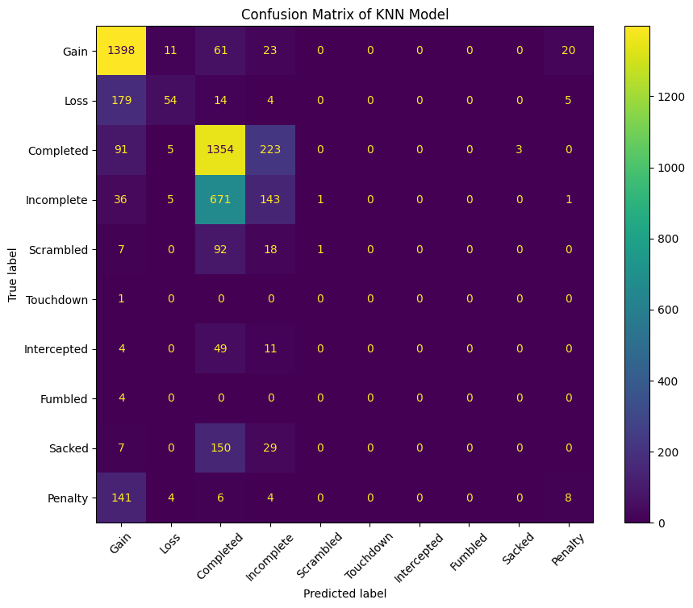

Chris Kornaros
Home
About
Guides
Guides
Projects
Projects
Data Engineering and Architecture Projects
Data Science and Machine Learning Projects
Blogs
Blogs
Data Science and Machine Learning
Projects
Data Engineering and Architecture
Bank Marketing ETL
Open Source Data and Analytics Architecture
Basic Open Source Architecture
Data Science and Machine Learning
Gym Market Analysis
Login Validation
Netflix Movies
Titanic Disaster
NFL Big Data Bowl 2025
On this page
Projects
Categories
All
(5)
DataCamp
(3)
Kaggle
(1)
Research
(1)
Data Science and Machine Learning Projects
Landing page for all my project posts related to Data Science and Machine Learning.
Projects

NFL Big Data Bowl 2025
Research
I will add to this later. Currently, this is a rough combination of my early notebooks.
Chris Kornaros
Nov 15, 2024
Titanic Disaster
Kaggle
The Kaggle Titanic dataset and ML competition is one that many people are familiar with, and if they’re like me, it was also their first ML project. I redid this after 3…
Chris Kornaros
Oct 15, 2024
Gym Market Analysis
DataCamp
You are a product manager for a fitness studio and are interested in understanding the current demand for digital fitness classes. You plan to conduct a market analysis in…
Chris Kornaros
Sep 30, 2024
Netflix Movies
DataCamp
Netflix
! What started in 1997 as a DVD rental service has since exploded into one of the largest entertainment and media companies.
Chris Kornaros
Sep 30, 2024
User Login Validation
DataCamp
You recently joined a small startup as a junior developer. The product managers have come to you for help improving new user sign-ups for the company’s flagship mobile app.
Chris Kornaros
Sep 30, 2024
No matching items